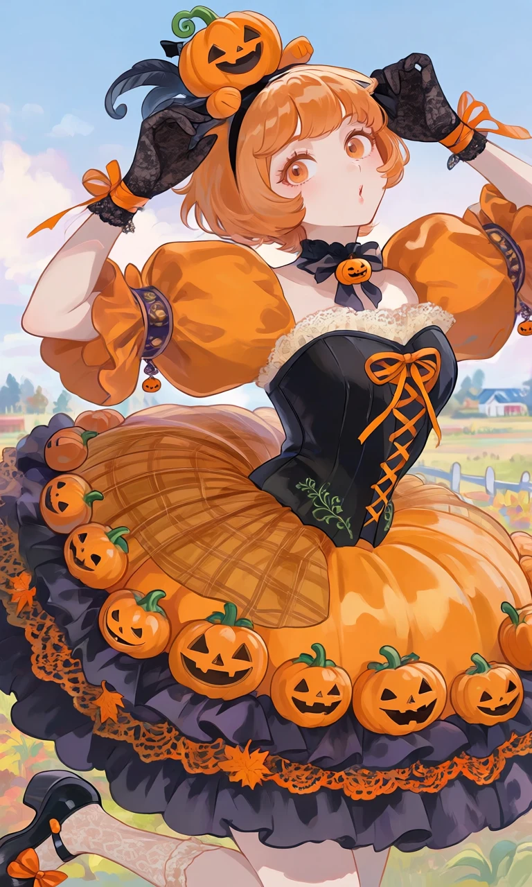
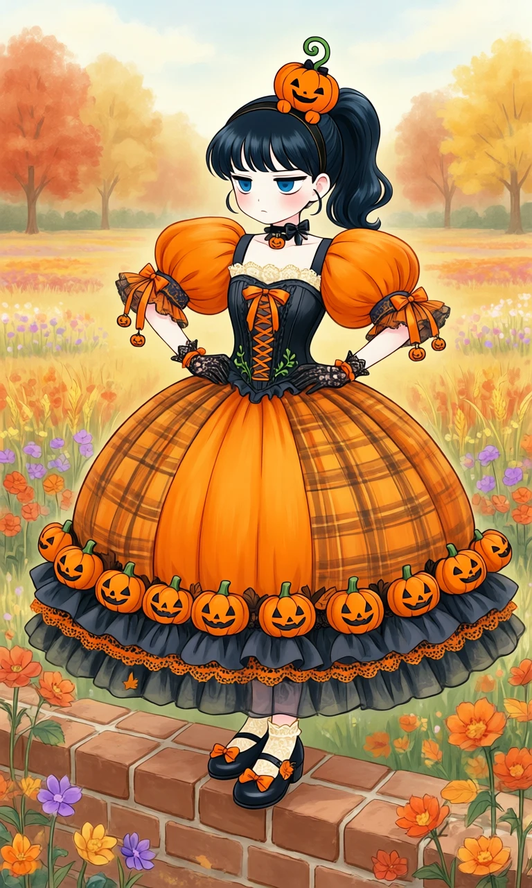

Pumpkin Patch Parade

Outfit Prompt
An elaborate feminine Halloween pumpkin-inspired Lolita dress with a fitted black corset bodice, bright orange crisscross ribbon lacing, and delicate cream lace around the neckline.
The dress features enormous rounded orange pumpkin-shaped puff sleeves with gathered fabric, dark decorative sleeve bands, orange satin ribbons, and tiny hanging pumpkin charms.
The fitted waist has delicate green vine embroidery. The extremely full, rounded bell-shaped skirt resembles a giant pumpkin, with layered orange and golden-orange plaid fabric across the upper skirt.
Several rows of adorable miniature orange jack-o'-lantern ornaments decorate the lower skirt, with smiling carved pumpkin faces arranged along the hem. Dark charcoal ruffles, orange lace trimming, delicate bows, and tiny autumn leaf accents complete the richly layered pumpkin princess dress.
A thin black Halloween headband holds a single tiny chibi jack-o'-lantern plush mascot, featuring a happy smiling pumpkin face, rosy cheeks, stubby arms, a curly green stem, and a tiny black bow.
Accessories include a black ribbon choker with a tiny orange pumpkin charm, delicate orange-and-black ribbon bracelets, black lace fingerless gloves, cream-colored lace socks, black Mary Jane shoes with orange bows, and small decorative autumn leaf accents.
Outfit Examples



